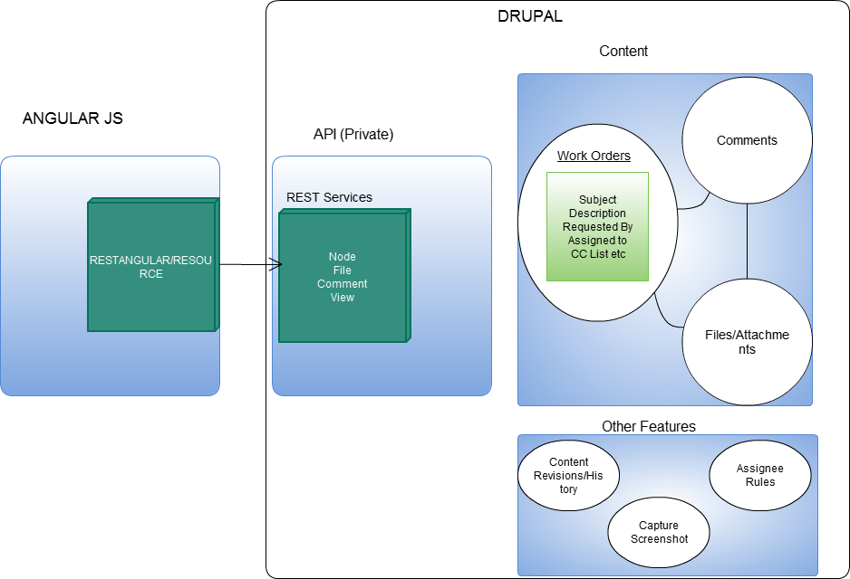

Technology
What's under the hood?
 |
AngularJS + Drupal
PhantomJS

- Headless browser
- Deployed on multiple servers
- Use multiple proxies
- Open and available for apps beyond Lighthouse Mobile
### Defining a JSON object
If the JSON object has more than one property, define it as multiple lines.
#### Before
```$scope.control.cclist = [{ccname:$scope.cc, highlightClass:'unchecked', done:false}];```
#### After
```
$scope.control.cclist = [{
ccname: $scope.cc,
highlightClass: 'unchecked',
done: false
}];
```
***
Defining a JSON object
If the JSON object has more than one property, define it as multiple lines.
Before
$scope.control.cclist = [{ccname:$scope.cc, highlightClass:'unchecked', done:false}];
After
$scope.control.cclist = [{
ccname: $scope.cc,
highlightClass: 'unchecked',
done: false
}];
Future Planning
- @Person addressing
- URL Comparison
- Sites DB integration
- Ticket Templates